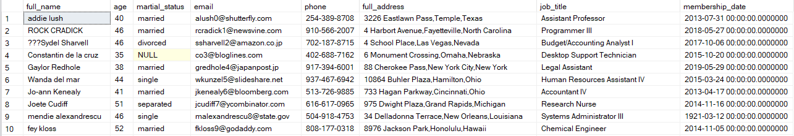

Club Member Information
Having a clean and reliable dataset is essential for research and analysis. In reality, the data we collect often contains imperfections, such as missing values, grammatical errors, null entries, and duplicates. However, with a solid understanding of data cleaning techniques, we can mitigate the impact of these issues.
In this project, we'll focus on data cleaning using SQL (Structured Query Language). Our chosen tool is SQL Server, specifically the SQL Server Management Studio 20 (SSMS). We'll work with a sample dataset about club member information, which is available on GitHub. You can find the relevant links at the end of this page.
First, let's examine the raw data. As we can see the data is quite messy. We can quickly see there are special characters in name and job columns, as well as incorrect date.
We'll first create a new table to avoid any errors get into the raw data.
select * into #supertemp from club_member_info; DROP TABLE IF EXISTS [dbo].[club_member_info_clean] CREATE TABLE [dbo].[club_member_info_clean] ( [member_id] [int] IDENTITY(1,1) NOT NULL, [full_name] [nvarchar](50) NULL, [age] [int] NULL, [martial_status] [nvarchar](50) NULL, [email] [nvarchar](50) NULL, [phone] [nvarchar](50) NULL, [full_address] [nvarchar](100) NULL, [job_title] [nvarchar](50) NULL, [membership_date] [datetime2](7) NULL, ) ON [PRIMARY]; insert into club_member_info_clean select * from #supertemp;
We'll then check and delete any duplicate rows that is unnecessary
select full_name, COUNT(full_name)
from club_member_info_clean
group by full_name
having COUNT(full_name) >1;
delete from club_member_info_clean
where member_id not in
(
select MIN(member_id)
from club_member_info_clean
group by full_name
);
There are special characters and uppercase names. We'll use SUBSTRING and PATINDEX to find and REPLACE it.
UPDATE club_member_info_clean
set full_name = LOWER(TRIM
(
case
when full_name like '[^A-Za-z0-9]%'
then REPLACE(full_name, SUBSTRING(full_name, 1,
PATINDEX('[^A-Za-z0-9]%', full_name)),'')
when full_name like '%[^A-Za-z0-9]'
then REPLACE(full_name, REVERSE(SUBSTRING(REVERSE(full_name), 1,
PATINDEX('[^A-Za-z0-9]%', REVERSE(full_name)))),'')
else full_name
end
));
There're inappropriate age, syntax error and incorrect phone numbers. Let's fix it.
UPDATE club_member_info_clean
set age =
STUFF(age,3,1,'')
where LEN(age)>2;
UPDATE club_member_info_clean
set martial_status = 'divorced'
where martial_status = 'divored';
UPDATE club_member_info_clean
set phone = null
where LEN(phone) < 12;
Some state names are misspell, change to corrected name.
UPDATE club_member_info_clean
set full_address = TRIM
(
case
when full_address like '% Puerto Rico' then REPLACE(full_address, ' Puerto Rico', 'Puerto Rico')
when full_address like '%Districts of Columbia' then REPLACE(full_address, 'Districts of Columbia', 'District of Columbia')
when full_address like '%NewYork' then REPLACE(full_address, 'NewYork', 'New York')
when full_address like '%NorthCarolina' then REPLACE(full_address, 'NorthCarolina', 'North Carolina')
when full_address like '%South Dakotaaa' then REPLACE(full_address, 'South Dakotaaa', 'South Dakota')
when full_address like '%Tej+F823as' then REPLACE(full_address, 'Tej+F823as', 'Texas')
when full_address like '%Tejas' then REPLACE(full_address, 'Tejas', 'Texas')
when full_address like '%Tennesseeee' then REPLACE(full_address, 'Tennesseeee', 'Tennesse')
when full_address like '%Kalifornia' then REPLACE(full_address, 'Kalifornia', 'California')
when full_address like '%Kansus' then REPLACE(full_address, 'Kansus', 'Kansas')
else full_address
end
);
We'll add two new coloumns City & State and also the date must be 20xx.
update club_member_info_clean
set
city =
PARSENAME(REPLACE(full_address, ',', '.'), 2),
state =
PARSENAME(REPLACE(full_address, ',', '.'), 1)
;
UPDATE club_member_info_clean
set membership_date =
case
when membership_date like '19%'
then STUFF(membership_date, 1, 2, '20')
else membership_date
end;
The job title include roman numerals, change it to number level. [I, II to Level 1, 2]
UPDATE club_member_info_clean
set job_title = TRIM
(
case
when right(job_title COLLATE Latin1_General_CS_AS, 2) = 'IV'
then REPLACE(job_title, right(job_title COLLATE Latin1_General_CS_AS, 2), 'Level 4')
when right(job_title COLLATE Latin1_General_CS_AS, 3) = 'III'
then REPLACE(job_title, right(job_title COLLATE Latin1_General_CS_AS, 3), 'Level 3')
when right(job_title COLLATE Latin1_General_CS_AS, 2) = 'II'
then REPLACE(job_title, right(job_title COLLATE Latin1_General_CS_AS, 2), 'Level 2')
when right(job_title COLLATE Latin1_General_CS_AS, 1) = 'I'
then REPLACE(job_title, right(job_title COLLATE Latin1_General_CS_AS, 1), 'Level 1')
else job_title
end
);
We've done the data cleaning process. We can now do some analysis.
-- What is the age range of members?
select
COUNT(case when age < 20 then 1 end) as [Under 20],
COUNT(case when age >= 20 and age <40 then 1 end) as [20 to 39],
COUNT(case when age >= 40 and age < 60 then 1 end) as [40 to 59],
COUNT(case when age >= 60 then 1 end) as [60 and over]
from club_member_info_clean;
-- The average number of members registered based on months through out the years.
with CTE as
(
select MONTH(membership_date) as MONTH,
YEAR(membership_date) as YEAR,
COUNT(*) as month_count
from club_member_info_clean
group by MONTH(membership_date),
YEAR(membership_date)
)
select [month],
AVG(month_count) as Avgmem_month
from CTE
group by [month]
order by [month];
The End.
For the full code, see documentation on GitHub: github.com/MichaelTung259/Club-Member-Info
Dataset link: github.com/iweld/data_cleaning
Happy Cleaning!